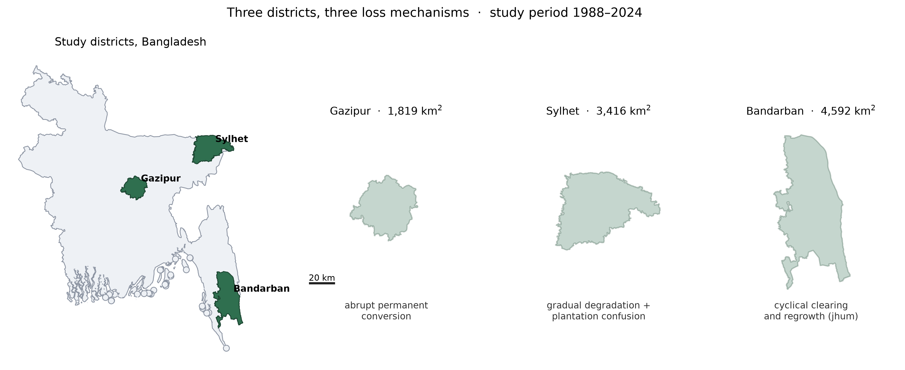
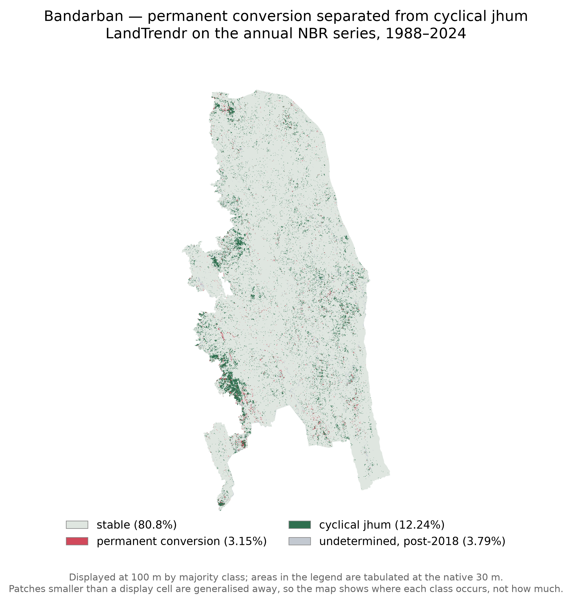
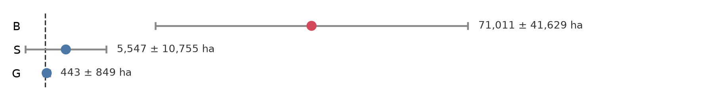
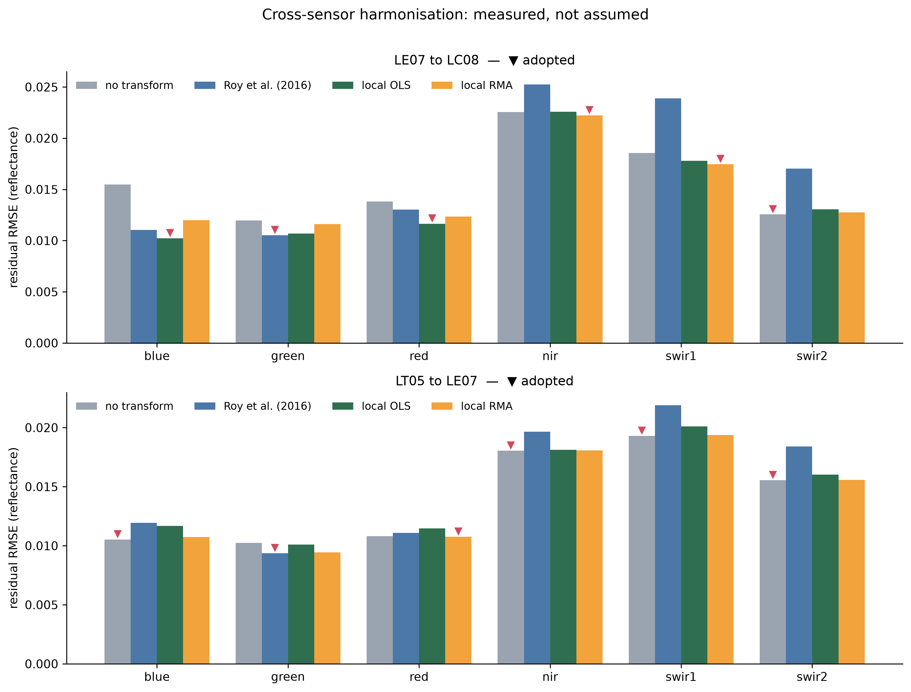
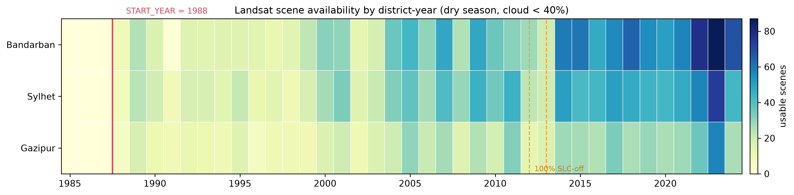

Undergraduate thesis · Remote sensing · 1988–2024
We measured forest cover change across three districts of Bangladesh using Landsat, and compared classical machine learning against deep learning at each one. No single method won everywhere. Which method works depends on whether the thing you are trying to see is spectral, spatial, or temporal — and in Bandarban, it is temporal, which is why the standard approach reports roughly four times the forest loss that actually occurred.
Every figure on this page derived from the reference sample is provisional. Two trained interpreters working from the same written protocol agreed at close to chance on where forest begins (Cohen's κ of 0.157 and 0.038 against a 0.75 threshold). Until that is reconciled these numbers are indicative, not final. We report them anyway, because an unreported κ is indistinguishable from an unmeasured one.
The design
Most method comparisons hold the landscape constant and vary the model. This one varies both. Each district contributes a different loss mechanism, which is what makes the interaction between the structure of a land-cover class and the capability of a model visible at all.
Abrupt, permanent conversion as Dhaka expands north. Cleared land looks different from forest, and stays different. The easy case.
Tea estates are as green and as dense as natural forest. What separates them is pattern — planted rows, uniform canopy, geometric edges — not colour.
Shifting cultivation (jhum): clear, crop, abandon, regrow, repeat on a five-to-seven year cycle. Any single pair of dates catches it mid-cycle and calls it something it is not.

The main result
A two-date comparison cannot tell a cleared jhum plot from a permanently converted one. It scores the same ground as loss, as gain, or as no change depending only on where the two dates happen to fall in the cycle. Fitting a trajectory to the full annual series instead — thirty-seven dry-season composites, 1988 to 2024 — separates the two, because only the trajectory shows whether the canopy came back.
of disturbed land in Bandarban is permanent conversion. The remaining 63.8% is cyclical jhum that regrows, and 19.8% is undetermined because it happened too close to the end of the series to judge recovery. A bitemporal comparison would have reported roughly four times the deforestation that occurred.

Model comparison
Random Forest, a U-Net, and a stacked ensemble of the two, scored on spatially disjoint test blocks. The ordering follows training-set size exactly: Random Forest wins decisively where data is scarce, loses where there is enough to fit a deep model, and ties in between.
| District | Random Forest | U-Net | Ensemble | Training patches |
|---|---|---|---|---|
| Gazipur | 0.4125 | 0.3157 | 0.4443 | 55 |
| Sylhet | 0.5028 | 0.5895 | 0.5187 | 167 |
| Bandarban | 0.4632 | 0.4607 | 0.4754 | 260 |
Holding the architecture and the data constant and switching only the three GLCM texture bands in and out moves plantation F1 by +0.0824, a 22% relative gain — and the improvement is almost entirely confined to that one class. Random Forest, working pixel by pixel, scores 0.0286 on the same class. It has no access to the planted rows and uniform canopy that define a tea estate, because those are properties of a neighbourhood, not a pixel.
| Run | Non-forest | Natural forest | Plantation | Water |
|---|---|---|---|---|
| U-Net, 23 bands (with texture) | 0.9389 | 0.3163 | 0.4520 | 0.6508 |
| U-Net, 20 bands (no texture) | 0.9368 | 0.3172 | 0.3696 | 0.6244 |
| Random Forest (per-pixel) | — | — | 0.0286 | — |
Area estimation
Areas are reported through the Olofsson stratified estimator with 95% confidence intervals, never as raw pixel counts. The reference sample was reduced from a planned 1,650 points to 400 under schedule pressure, and the cost of that reduction is visible in the intervals rather than hidden: with two and seven reference change points respectively, Gazipur and Sylhet cannot resolve loss from zero.
| District | Adjusted loss | Reference change points | Excludes zero |
|---|---|---|---|
| Gazipur | 443 ± 849 ha | 2 | No |
| Sylhet | 5,547 ± 10,755 ha | 7 | No |
| Bandarban | 71,011 ± 41,629 ha | 18 | Yes |

One further result came out of the over-sampled loss stratum and is arguably more interesting than the loss figure itself: Gazipur drew 40 points from it, and the interpreter judged only 2 to be genuine forest-to-non-forest transitions. That is a direct measurement of commission error in the global product used to train the classifiers.
Negative results
Mapping tea plantation in Bangladesh is not merely difficult; on the evidence here it is currently unsolved. Five independent measurements point the same way, and each one is a method that was tried properly and failed.
Manual digitising was wrong at sub-metre resolution. A polygon drawn as 1,906 ha of tea turned out to be roughly 1,600 ha of hill forest. It was corrected to 321 ha, and only because somebody independently checked it.
No open dataset locates these estates. The global planted-trees database carried no Bangladesh layer in the version tested. OpenStreetMap has one usable polygon district-wide. Public gazetteers resolve one estate in nineteen under strict name matching.
A purpose-built row detector found nothing. An FFT periodicity and Hough line detector, designed to catch the planted-row signature, returned 4.36 for forest against 4.27 for tea. No separation.
Two trained people could not agree on what tea looks like. On 40 points drawn deliberately inside the tea-growing upazilas, the two interpreters agreed on 12. One called 25 of them plantation; the other called 14, and called 20 of them natural forest.
The layer we did draw is incomplete, and we bound it. Against a district total reported in excess of 10,000 ha. Tea outside those polygons is labelled natural forest, so the Sylhet confusion is reduced rather than eliminated.
Because of the fourth of those, the plantation stratum is reported as not usable for validation. A reference sample whose interpreters agree at chance is not an independent yardstick, and scoring against it would present a disagreement as a measurement.
Method
Landsat Collection 2 Level-2 surface reflectance, dry season only (1 November – 31 March), cloud and shadow masked, median reduced into a 23-band stack. Train/validation/test splits are whole disjoint 10 km blocks, never random pixels, because random splitting on spatially autocorrelated data inflates accuracy silently.
Two standard practices were tested rather than adopted on authority, and one of them failed. Published cross-sensor harmonisation coefficients, fitted over the continental United States, performed worse here than applying no correction at all (held-out residual 0.0168 against 0.0158 raw). They would have degraded NIR by 8.5% and SWIR2 by 69.8% — the two bands NBR is built from, and NBR is what the entire Bandarban result depends on. Locally fitted coefficients were adopted per band instead.


Explore